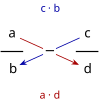
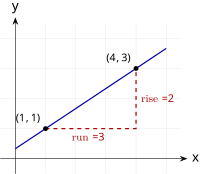
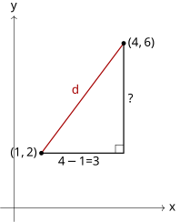
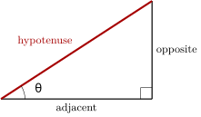
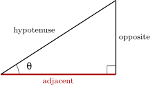

Practice the formulas one topic at a time. Tap a topic to open or close it. Your progress is saved on this device, and Check your results at the bottom shows your score for each topic.
Pick a name and a formula to match them. Once you pick a card, the other cards of the same kind dim.
Area of a circle\(\displaystyle = \pi r^2\)Circumference\(\displaystyle = 2\pi r\)Diameter\(\displaystyle = 2r\)Equation of a circle\(\displaystyle (x-h\,)^2 + (y-k\,)^2 = r^2\)
Hint 1
Think about units. An area is measured in square units (like cm²). A length, such as a circumference or a diameter, is measured in plain units (like cm).
Hint 2
Only one formula contains both \(x\) and \(y\). It describes every point \((x, y)\) on a circle with center \((h, k)\).
Hint 3
The diameter is the length of two radii placed end to end.
Name
Formula
Area of a circle
\(A = \pi r^2\)
Circumference
\(C = 2\pi r\)
Diameter
\(d = 2r\)
Equation of a circle
\((x-h)^2 + (y-k)^2 = r^2\)
Area has \(r^2\), so it is in square units: \(A = \pi r^2\).
Circumference is a length, so \(r\) is not squared: \(C = 2\pi r\).
Diameter: \(d = r + r = 2r\).
Formula Wordle
Fill in the blanks to finish each formula, then press Enter.
How to play Wordle
Green: right symbol, right spot. It stays filled in on your next try.
Yellow: the symbol is in the formula, but in a different spot.
Circumference is a length, not an area, so nothing is squared.
Hint 2
A circle with diameter \(d = 10\) has a circumference of about \(31.4\).
Hint 3
\(\pi\) is defined as the circumference divided by the diameter: \(\pi = \frac{C}{d}\).
Answer:\(C = \pi d\)
Multiply both sides of \(\pi = \frac{C}{d}\) by \(d\) to get \(C = \pi d\).
You may also know \(C = 2\pi r\). It gives the same value, because \(d = 2r\): \(\pi d = \pi (2r) = 2\pi r\). This puzzle asks for the version with \(d\).
Wordle 3 of 3: Diameter of a circle, using its radius
Write a small example out as factors and count them: \(x^2 \cdot x^3 = (x \cdot x)(x \cdot x \cdot x)\).
Hint 2
For \(x^0\), simplify \(\frac{x^3}{x^3}\) two ways: by cancelling, and with the dividing rule.
Hint 3
For \(x^{-a}\), continue the pattern \(x^2 = x \cdot x\), \(x^1 = x\), \(x^0 = 1\): each time the exponent goes down by \(1\), the value is divided by \(x\).
Expression
Simplified
\(x^a \cdot x^b\)
\(x^{a+b}\)
\(\frac{x^a}{x^b}\)
\(x^{a-b}\)
\((x^a)^b\)
\(x^{ab}\)
\((xy)^a\)
\(x^a y^a\)
\(x^0\)
\(1\)
\(x^{-a}\)
\(\frac{1}{x^a}\)
Each rule comes from counting factors of \(x\):
\(x^a \cdot x^b\): \(a\) factors of \(x\) followed by \(b\) more is \(a + b\) factors in total.
\(\frac{x^a}{x^b}\): the \(b\) factors in the denominator cancel \(b\) of the \(a\) factors in the numerator.
Try specific exponents: \(\frac{x^5}{x^2} = \frac{x \cdot x \cdot x \cdot x \cdot x}{x \cdot x}\). Cancel matching factors. How many factors of \(x\) are left?
Hint 2
Order matters. Check your answer with \(a = 5\) and \(b = 2\): it should give \(x^3\).
Answer:\(\frac{x^a}{x^b} = x^{a-b}\)
Each of the \(b\) factors of \(x\) in the denominator cancels one of the \(a\) factors in the numerator, leaving \(a - b\).
Follow the pattern: \(x^3 = x \cdot x \cdot x\), \(x^2 = x \cdot x\), \(x^1 = x\). Each time the exponent goes down by \(1\), the value is divided by \(x\). Continue the pattern to \(x^0\) and \(x^{-1}\).
Hint 2
A negative exponent does not make the value negative. For example, \(2^{-1} = \frac{1}{2}\).
Answer:\(x^{-a} = \frac{1}{x^a}\)
\(x^{-a}\) is the reciprocal of \(x^a\). For example, \(2^{-3} = \frac{1}{2^3} = \frac{1}{8}\).
− xᵃ: the minus sign is part of the exponent. It doesn’t make the value negative: \(2^{-3} = \frac{1}{8}\), not \(-8\).
0: \(x^{-a}\) is never \(0\), because \(\frac{1}{x^a} \neq 0\).
What the symbols mean
Symbol
Meaning
\(x\)
The base
\(a\), \(b\)
Exponents
\(x^a\)
For a whole number \(a\): the product of \(a\) factors of \(x\). Example: \(x^3 = x \cdot x \cdot x\)
\(x^0\)
\(x^0 = 1\) for every \(x \neq 0\)
\(x^{-a}\)
\(x^{-a} = \frac{1}{x^a}\) for \(x \neq 0\) (the reciprocal of \(x^a\))
Expanding with FOIL
Memory Match
Memory Match 1 of 2: FOIL: which terms get multiplied?
\(\displaystyle (a + b\,)(c + d\,)\)\(\displaystyle ac + ad + bc + bd\)\(\displaystyle (a + b\,)^2\)\(\displaystyle a^2 + 2ab + b^2\)\(\displaystyle (a - b\,)^2\)\(\displaystyle a^2 - 2ab + b^2\)\(\displaystyle (a + b\,)(a - b\,)\)\(\displaystyle a^2 - b^2\)
Hint 1
A square is a product of a bracket with itself: \((a + b)^2 = (a + b)(a + b)\). Expand it with FOIL.
Hint 2
Only two of the expanded forms contain a \(2ab\) term: one with \(+2ab\) and one with \(-2ab\). In \((a + b)(a - b)\), compare the Outer product \(a \cdot (-b)\) with the Inner product \(b \cdot a\).
Product
Expanded
\((a + b)(c + d)\)
\(ac + ad + bc + bd\)
\((a + b)^2\)
\(a^2 + 2ab + b^2\)
\((a - b)^2\)
\(a^2 - 2ab + b^2\)
\((a + b)(a - b)\)
\(a^2 - b^2\)
\[
\begin{aligned}
(a + b)^2 &= a^2 + ab + ab + b^2 = a^2 + 2ab + b^2 \\
(a - b)^2 &= a^2 - ab - ab + b^2 = a^2 - 2ab + b^2 \\
(a + b)(a - b) &= a^2 - ab + ab - b^2 = a^2 - b^2
\end{aligned}
\]
A common mistake is \((a + b)^2 = a^2 + b^2\). It leaves out the middle term \(ab + ab = 2ab\).
Formula Wordle
Fill in the blanks to finish each formula, then press Enter.
How to play Wordle
Green: right symbol, right spot. It stays filled in on your next try.
Yellow: the symbol is in the formula, but in a different spot.
15x as the middle term: \(15 = 3 \cdot 5\) is the Last product, the constant term. The middle term is the sum of the Outer and Inner products: \(5x + 3x = 8x\).
Look for a card whose two fractions already have the same denominator (bottom). Those can be combined without changing anything.
Hint 2
When the denominators are different, rewrite both fractions over a common denominator: \(\frac{p}{q} + \frac{r}{s} = \frac{p \cdot s}{q \cdot s} + \frac{r \cdot q}{s \cdot q}\).
Hint 3
In \(\frac{2}{x} + \frac{3}{x^2}\), the denominator \(x\) is a factor of \(x^2\), so \(x^2\) is already a common denominator.
Expression
Combined
\(\frac{a}{x} + \frac{b}{x}\)
\(\frac{a + b}{x}\)
\(\frac{a}{b} + \frac{c}{d}\)
\(\frac{ad + bc}{bd}\)
\(\frac{a}{b} - \frac{c}{d}\)
\(\frac{ad - bc}{bd}\)
\(\frac{1}{x} + \frac{1}{y}\)
\(\frac{y + x}{xy}\)
\(\frac{2}{x} + \frac{3}{x^2}\)
\(\frac{2x + 3}{x^2}\)
Multiplying a fraction by \(\frac{d}{d} = 1\) (with \(d \neq 0\)) doesn’t change its value, so: \[
\begin{aligned}
\frac{a}{b} + \frac{c}{d} &= \frac{a}{b} \cdot \frac{d}{d} + \frac{c}{d} \cdot \frac{b}{b} \\
&= \frac{ad}{bd} + \frac{bc}{bd} \\
&= \frac{ad + bc}{bd}
\end{aligned}
\] For \(\frac{2}{x} + \frac{3}{x^2}\), only the first fraction needs to change: \(\frac{2 \cdot x}{x \cdot x} + \frac{3}{x^2} = \frac{2x + 3}{x^2}\).
Formula Wordle
Fill in the blanks to finish each formula, then press Enter.
How to play Wordle
Green: right symbol, right spot. It stays filled in on your next try.
Yellow: the symbol is in the formula, but in a different spot.
Gray: the symbol isn’t in the formula.
Wordle 1 of 3: Subtracting two fractions, \(\frac{a}{b} - \frac{c}{d}\)
Subtracting two fractions, \(\frac{a}{b} - \frac{c}{d}\)
Hint 1
The denominators \(b\) and \(d\) are different. Before subtracting, rewrite both fractions with the same denominator. The product \(bd\) works.
Hint 2
To give \(\frac{a}{b}\) the denominator \(bd\), multiply it by \(\frac{d}{d}\). To give \(\frac{c}{d}\) the denominator \(bd\), multiply it by \(\frac{b}{b}\). This is called cross multiplying:

Hint 3
Subtract in the same order as the question: the first fraction’s new numerator, minus the second fraction’s new numerator.
Subtracting fractions with variables in the denominator, \(\frac{3}{x} - \frac{2}{y}\)
Assume \(x \neq 0\) and \(y \neq 0\).
Hint 1
The denominators \(x\) and \(y\) are different, so first rewrite both fractions with a common denominator. Which expression has both \(x\) and \(y\) as factors?
Hint 2
Use the common denominator \(xy\): multiply \(\frac{3}{x}\) by \(\frac{y}{y}\), and multiply \(\frac{2}{y}\) by \(\frac{x}{x}\).
Least common denominator of \(\frac{2}{x}\) and \(\frac{3}{x^2}\)
The least common denominator (LCD) is the simplest expression that both denominators divide into evenly. Assume \(x \neq 0\).
Hint 1
The denominators are \(x\) and \(x^2\). Is one of them already a multiple of the other?
Hint 2
\(x^2 = x \cdot x\). So \(\frac{2}{x}\) can be rewritten with denominator \(x^2\) by multiplying it by \(\frac{x}{x}\).
Hint 3
Multiplying the denominators gives \(x \cdot x^2 = x^3\). That is a common denominator, but not the least one.
Answer:\(\text{LCD} = x^2\)
Only the first fraction needs to change: \[
\begin{aligned}
\frac{2}{x} + \frac{3}{x^2} &= \frac{2 \cdot x}{x \cdot x} + \frac{3}{x^2} \\
&= \frac{2x + 3}{x^2}
\end{aligned}
\]
x³: a common denominator, but not the least one. Using it gives \(\frac{2x^2 + 3x}{x^3}\), which still has to be simplified by cancelling an \(x\).
2x, 5 or 6: the LCD comes from the denominators only. The numerators \(2\) and \(3\) don’t affect it.
Steps for adding or subtracting fractions
The numerator is the top of a fraction and the denominator is the bottom. No denominator can be \(0\).
Same denominators? Add or subtract the numerators and keep the denominator: \(\frac{a}{x} + \frac{b}{x} = \frac{a + b}{x}\).
Different denominators? Rewrite both fractions over a common denominator.
Cross multiply: \(\frac{a}{b} + \frac{c}{d} = \frac{ad + bc}{bd}\). The product \(bd\) is always a common denominator.
Least common denominator (LCD): if one denominator is a factor of the other, the other one is the LCD. Example: \(x\) is a factor of \(x^2\), so the LCD of \(\frac{2}{x}\) and \(\frac{3}{x^2}\) is \(x^2\).
Never add the denominators: \(\frac{1}{x} + \frac{1}{y} \neq \frac{2}{x + y}\).
Order of Operations (PEMDAS)
Multiple Choice
Question: Simplify \(-1 \cdot x \cdot -1 + x + 2 - 2 - 1\)
Picture a number line. On a number line, the number further to the left is the smaller one.
Hint 2
Which is further left on a number line: \(-5\) or \(-4\)?
Answer:\(-5 < -4\)
On a number line, \(-5\) is one step to the left of \(-4\), and a number further left is smaller: \[
-5 < -4 < -3 < \dots < 0 < \dots < 4 < 5
\]
\(-5 > -4\): this is true for \(5 > 4\), but a minus sign reverses the order. Think of money: owing \(\$5\) (\(-5\)) is worse than owing \(\$4\) (\(-4\)).
\(-4 < -5\): this is the same claim as \(-5 > -4\), written the other way around, so it is also false.
Question 2 of 4: A negative of a negative, \(-(-2)\)
Start with the true statement \(2 < 3\). Multiply both sides by \(-1\). Which statement is true?
\(-2 > -3\)
\(-2 < -3\)
\(2 > 3\)
\(-2 = -3\)
Hint 1
Multiply each side by \(-1\) first: what are \(-1 \cdot 2\) and \(-1 \cdot 3\)?
Hint 2
Now compare \(-2\) and \(-3\) on a number line. Which one is further left?
Answer:\(-2 > -3\)
Multiplying by \(-1\) gives \(-1 \cdot 2 = -2\) and \(-1 \cdot 3 = -3\). On a number line, \(-3\) is to the left of \(-2\), so \(-2 > -3\).
The sign flipped from \(<\) to \(>\). That’s the rule: when you multiply or divide both sides of an inequality by a negative number, reverse the inequality sign.
\(-2 < -3\): this keeps the sign the same, which is only right when multiplying by a positive number.
\(2 > 3\): this flips the sign but forgets to multiply the numbers by \(-1\).
To get \(x\) alone, divide both sides by \(-2\). What happens to the inequality sign when you divide by a negative number?
Hint 2
Check your answer with a number. For example, \(x = 0\): is \(-2 \cdot 0 < 6\) true? Does your answer include \(x = 0\)?
Answer:\(x > -3\)
Divide both sides by \(-2\). Dividing by a negative number reverses the sign: \[
\begin{aligned}
-2x &< 6 \\
\frac{-2x}{-2} &> \frac{6}{-2} \\
x &> -3
\end{aligned}
\]
Check with \(x = 0\): \(-2 \cdot 0 = 0 < 6\) is true, and \(0 > -3\), so \(x = 0\) is included, as it should be.
\(x < -3\): divided correctly but forgot to reverse the sign. Check with \(x = -4\): \(-2 \cdot (-4) = 8\), and \(8 < 6\) is false.
\(x > 3\) or \(x < 3\): divided by \(2\) instead of \(-2\), so the minus sign was lost.
Pick a name and a formula to match them. Once you pick a card, the other cards of the same kind dim.
Slope from two points\(\displaystyle = \frac{y_1 - y_2}{x_1 - x_2}\)Slope from a graph\(\displaystyle = \frac{\text{rise}}{\text{run}}\)Point-slope form\(\displaystyle y - y_1 = m(x - x_1\,)\)Slope-intercept form\(\displaystyle = mx + b\)Slope of a horizontal line\(\displaystyle = 0\)
Hint 1
Slope \(m\) measures steepness: how much \(y\) changes when \(x\) increases by \(1\).
Hint 2
Slope is the change in \(y\) divided by the change in \(x\). Two cards say this: one with coordinates, one with words.
Hint 3
Point-slope form uses a known point \((x_1, y_1)\). Slope-intercept form uses the \(y\)-intercept \(b\).
Name
Formula
Slope from two points
\(m = \frac{y_1 - y_2}{x_1 - x_2}\)
Slope from a graph
\(m = \frac{\text{rise}}{\text{run}}\)
Point-slope form
\(y - y_1 = m(x - x_1)\)
Slope-intercept form
\(y = mx + b\)
Slope of a horizontal line
\(m = 0\)
On a horizontal line, \(y\) never changes, so the rise is \(0\) and \(m = \frac{0}{\text{run}} = 0\).
(On a vertical line, \(x\) never changes, so the run is \(0\). Division by \(0\) is undefined, so the slope of a vertical line is undefined. Avoid saying “no slope”: some books use that phrase to mean a slope of \(0\).)
Formula Wordle
Fill in the blanks to finish each formula, then press Enter.
How to play Wordle
Green: right symbol, right spot. It stays filled in on your next try.
Yellow: the symbol is in the formula, but in a different spot.
Slope measures how steep a line is. In the diagram, going from \((1, 1)\) to \((4, 3)\), the line moves \(3\) to the right (the run) and \(2\) up (the rise).

Hint 2
A steep line rises a lot over a short run, so its slope should be a large number. Which order of division makes that happen?
Answer:\(m = \frac{\text{rise}}{\text{run}}\)
In the diagram, the rise is \(2\) and the run is \(3\), so \(m = \frac{2}{3}\).
run ÷ rise: upside down. It would give steep lines small slopes: here \(\frac{3}{2}\) instead of \(\frac{2}{3}\).
Wordle 2 of 3: Slope through two points, \((x_1, y_1)\) and \((x_2, y_2)\)
Slope through two points, \((x_1, y_1)\) and \((x_2, y_2)\)
The numerator \((y_1 - y_2)\) is given. Fill in the denominator. Assume \(x_1 \neq x_2\).
Hint 1
Slope is rise over run. The numerator \(y_1 - y_2\) is the rise (a change in \(y\)). Which coordinates give the run?
Hint 2
Subtract in the same order as the numerator: the numerator is “point 1 minus point 2”.
Answer:\(m = \frac{y_1 - y_2}{x_1 - x_2}\)
This is “rise over run” written with coordinates. For the points \((1, 1)\) and \((4, 3)\): \[
\begin{aligned}
m &= \frac{1 - 3}{1 - 4} \\
&= \frac{-2}{-3} = \frac{2}{3}
\end{aligned}
\]
( x₂ − x₁ ): mixing the order changes the sign: \(\frac{1 - 3}{4 - 1} = -\frac{2}{3}\), which is wrong.
y₁, y₂ in the denominator: that would be a change in \(y\) over a change in \(y\), not rise over run.
\(m = \frac{y_2 - y_1}{x_2 - x_1}\) is also correct: both differences use the same order (point 2 minus point 1).
Wordle 3 of 3: Point-slope form of a line through \((x_1, y_1)\) with slope \(m\)
What is the midpoint of the segment from \((2, 3)\) to \((8, -1)\)?
\((5, 1)\)
\((3, -2)\)
\((10, 2)\)
\((5, 2)\)
Hint 1
The midpoint’s \(x\)-coordinate is halfway between \(2\) and \(8\). Its \(y\)-coordinate is halfway between \(3\) and \(-1\).
Hint 2
Halfway between two numbers is their average: \(\frac{x_1 + x_2}{2}\).
Answer:\((5, 1)\)
Average each coordinate: \[
\begin{aligned}
M &= \left(\frac{2 + 8}{2}, \frac{3 + (-1)}{2}\right) \\
&= \left(\frac{10}{2}, \frac{2}{2}\right) \\
&= (5, 1)
\end{aligned}
\]
\((10, 2)\): added the coordinates but forgot to divide by \(2\).
\((3, -2)\): subtracted and halved, \(\left(\frac{8 - 2}{2}, \frac{-1 - 3}{2}\right)\). That is how far the midpoint is from the first point, not where it is.
\((5, 2)\): \(3 + (-1) = 2\), but that sum still has to be divided by \(2\).
Question 2 of 2: Distance from \((1, 2)\) to \((4, 6)\)
Match each name to its formula: pick one of each. The two points are \((x_1, y_1)\) and \((x_2, y_2)\), with \(\Delta x = x_2 - x_1\) and \(\Delta y = y_2 - y_1\).
Midpoint: average the \(x\)-coordinates and average the \(y\)-coordinates.
Distance: the horizontal change \(x_2 - x_1\) and the vertical change \(y_2 - y_1\) are the legs of a right triangle. The distance \(d\) is its hypotenuse, so \(d^2 = (\Delta x)^2 + (\Delta y)^2\) and \(d = \sqrt{(x_2 - x_1)^2 + (y_2 - y_1)^2}\).
The \(x\)-coordinate of the midpoint of \((x_1, y_1)\) and \((x_2, y_2)\)
\(x_m\) is the \(x\)-coordinate of the midpoint. The first part, \((x_1\), is given.
Hint 1
The midpoint is exactly halfway between the two points. How do you find the number halfway between two numbers?
Hint 2
Halfway between \(2\) and \(8\) is \(5\). Which calculation with \(2\) and \(8\) gives \(5\)?
Answer:\(x_m = \frac{x_1 + x_2}{2}\)
The midpoint’s \(x\)-coordinate is the average of the two \(x\)-coordinates. For example, halfway between \(x_1 = 2\) and \(x_2 = 8\): \[
x_m = \frac{2 + 8}{2} = \frac{10}{2} = 5
\] The \(y\)-coordinate works the same way: \(y_m = \frac{y_1 + y_2}{2}\).
−: \(\frac{x_1 - x_2}{2}\) is half the distance between the \(x\)-values, not the point halfway between them. For \(2\) and \(8\) it gives \(\frac{2 - 8}{2} = -3\).
y₂: the \(x\)-coordinate of the midpoint uses only \(x\)-coordinates.
Wordle 2 of 2: The distance \(d\) between \((x_1, y_1)\) and \((x_2, y_2)\), squared
The distance \(d\) between \((x_1, y_1)\) and \((x_2, y_2)\), squared
The horizontal part, \((x_2 - x_1)^2\), is given. Fill in the vertical part, subtracting in the same order (point 2 minus point 1).
Hint 1
Think of the Pythagorean theorem, \(a^2 + b^2 = c^2\). The segment between the two points is the hypotenuse \(c\) of a right triangle. What are its legs?
Hint 2
For the points \((1, 2)\) and \((4, 6)\), the right triangle looks like this. The horizontal leg is \(x_2 - x_1 = 4 - 1 = 3\).

Answer:\(d^2 = (x_2 - x_1)^2 + (y_2 - y_1)^2\)
The two points are the ends of the hypotenuse of a right triangle. Its legs are the horizontal change \(x_2 - x_1\) and the vertical change \(y_2 - y_1\). The Pythagorean theorem \(a^2 + b^2 = c^2\) gives \(d^2\), and taking the square root gives the distance formula: \[
d = \sqrt{(x_2 - x_1)^2 + (y_2 - y_1)^2}
\] For \((1, 2)\) and \((4, 6)\): \[
\begin{aligned}
d &= \sqrt{(4 - 1)^2 + (6 - 2)^2} \\
&= \sqrt{9 + 16} \\
&= \sqrt{25} = 5
\end{aligned}
\]
Forgetting ²: \(d^2\) is a sum of squares. \((4 - 1) + (6 - 2) = 7\) is the length of the path along the two legs, not the straight-line distance \(5\).
( y₁ − y₂ )² gives the same number, because \((-4)^2 = 4^2\). This board just asks for the same order as the \(x\) part.
What the symbols mean
Symbol
Meaning
\((x_1, y_1)\), \((x_2, y_2)\)
The two endpoints (“point 1” and “point 2”)
\(M\), \((x_m, y_m)\)
The midpoint: the point exactly halfway between them
\(d\)
The distance between the points (the length of the segment)
\(\Delta x = x_2 - x_1\)
Horizontal change (a leg of the right triangle). \(\Delta\) is the Greek letter delta: “change in”
\(\Delta y = y_2 - y_1\)
Vertical change (the other leg)
\(a^2 + b^2 = c^2\)
Pythagorean theorem: legs \(a\), \(b\) and hypotenuse \(c\) of a right triangle
What is the area of this triangle? The dashed segment is the height: it meets the base at a right angle.
\(16\)
\(20\)
\(32\)
\(40\)
Hint 1
Use \(A = \frac{1}{2} b h\). Which of the lengths \(8\), \(5\) and \(4\) is the base, and which is the height?
Hint 2
The height must meet the base at a right angle. The side of length \(5\) is slanted, so it is not the height.
Answer:\(16\)
The base is \(b = 8\) and the height is \(h = 4\) (the dashed segment, at a right angle to the base): \[
\begin{aligned}
A &= \frac{1}{2} \cdot 8 \cdot 4 \\
&= \frac{1}{2} \cdot 32 = 16
\end{aligned}
\]
\(20\): used the slanted side as the height: \(\frac{1}{2} \cdot 8 \cdot 5 = 20\).
\(32\): forgot the \(\frac{1}{2}\): \(8 \cdot 4 = 32\) is the area of the rectangle.
A right triangle has legs of length \(6\) and \(8\) and a hypotenuse of length \(10\). What is its area?
\(24\)
\(48\)
\(30\)
\(40\)
Hint 1
In a right triangle, the two legs meet at a right angle. Can one leg be the base and the other the height?
Answer:\(24\)
The legs are perpendicular, so one is the base and the other is the height: \[
\begin{aligned}
A &= \frac{1}{2} \cdot 6 \cdot 8 \\
&= \frac{1}{2} \cdot 48 = 24
\end{aligned}
\]
\(48\): forgot the \(\frac{1}{2}\).
\(30\) or \(40\): used the hypotenuse as the height, \(\frac{1}{2} \cdot 6 \cdot 10\) or \(\frac{1}{2} \cdot 8 \cdot 10\). The hypotenuse is not at a right angle to either leg.
Formula Wordle
Fill in the blanks to finish each formula, then press Enter.
How to play Wordle
Green: right symbol, right spot. It stays filled in on your next try.
Yellow: the symbol is in the formula, but in a different spot.
Each letter in SOH CAH TOA names either a trig function or a side of a right triangle.
Hint 2
The S, C and T are the functions (sine, cosine, tangent). So the O names a side. Which side is it, compared with the angle \(\theta\)?
Answer: Opposite
SOH means \(\sin\theta = \frac{\text{Opposite}}{\text{Hypotenuse}}\), and TOA means \(\tan\theta = \frac{\text{Opposite}}{\text{Adjacent}}\). The opposite side is the side across the triangle from the angle \(\theta\): it doesn’t touch \(\theta\).
Over: tempting, because \(\frac{O}{H}\) is read “O over H”. But the fraction bar is not one of the letters: O and H are the two sides.
Other and \(\cdot\): they don’t name a side of the triangle.
The S, C and T are the functions (sine, cosine, tangent). The other letters name sides of a right triangle.
Hint 2
A right triangle has one side that is always the longest. What is it called?
Answer: Hypotenuse
SOH means \(\sin\theta = \frac{\text{Opposite}}{\text{Hypotenuse}}\), and CAH means \(\cos\theta = \frac{\text{Adjacent}}{\text{Hypotenuse}}\). The hypotenuse is the side across from the right angle. It is the longest side.

Horizontal and Height: a right triangle can be drawn turned any way, so “horizontal” or “height” could be any side. The hypotenuse is always the side across from the right angle.
The S, C and T are the functions (sine, cosine, tangent). The other letters name sides of a right triangle, measured from the angle \(\theta\).
Hint 2
Two sides touch the angle \(\theta\). One is the hypotenuse. What is the other one called?
Answer: Adjacent
CAH means \(\cos\theta = \frac{\text{Adjacent}}{\text{Hypotenuse}}\), and TOA means \(\tan\theta = \frac{\text{Opposite}}{\text{Adjacent}}\). “Adjacent” means “next to”: the adjacent side touches the angle \(\theta\) and is not the hypotenuse.

Apposite: a real word (“fitting”), but not a side. It just looks like opposite.
Area: an area is not a side length, and a ratio of sides can’t use it.
Anti: not a side of a triangle.
Formula Wordle
Fill in the blanks to finish each formula, then press Enter.
How to play Wordle
Green: right symbol, right spot. It stays filled in on your next try.
Yellow: the symbol is in the formula, but in a different spot.